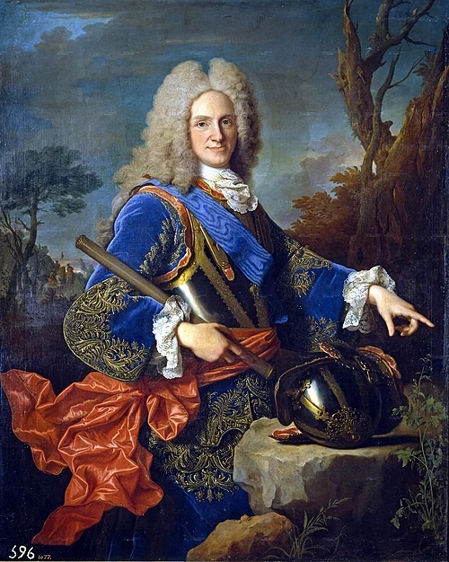
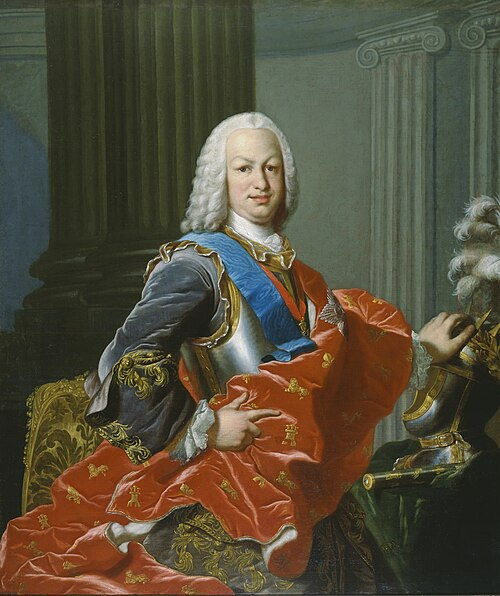

| Retrato | Monarca | Dinastía | Reinado | |
|---|---|---|---|---|
| Inicio | Fin | |||

|
Isabel I de Castela | Trastámara | 1474 | 1504 |

|
Fernando II de Aragón | Trastámara | 1479 | 1516 |

|
Xoana I | Trastámara | 1504 | 1555 |

|
Filipe I | Habsburgo | 1506 | 1506 |

|
Carlos I | Habsburgo | 1516 | 1556 |

|
Filipe II | Habsburgo | 1556 | 1598 |
| Filipe III | Habsburgo | 1598 | 1621 | |

|
Filipe IV | Habsburgo | 1621 | 1665 |

|
Carlos II | Habsburgo | 1665 | 1700 |
|
 |
Filipe V | Borbón | 1700 | 1746 |

|
Luís I | Borbón | 1724 | 1724 |
|
 |
Fernando VI | Borbón | 1746 | 1759 |

|
Carlos III | Borbón | 1759 | 1788 |
| Resumo por dinastías | Monarcas | Suma dos anos | ||
| Trastámara | 3 | 121 | ||
| Habsburgo | 6 | 190 | ||
| Borbón | 4 | 88 | ||